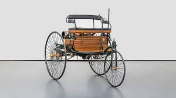
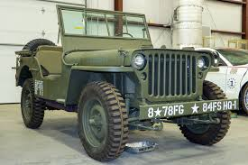
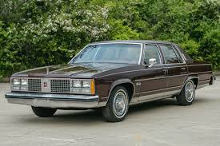
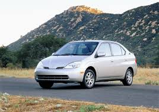
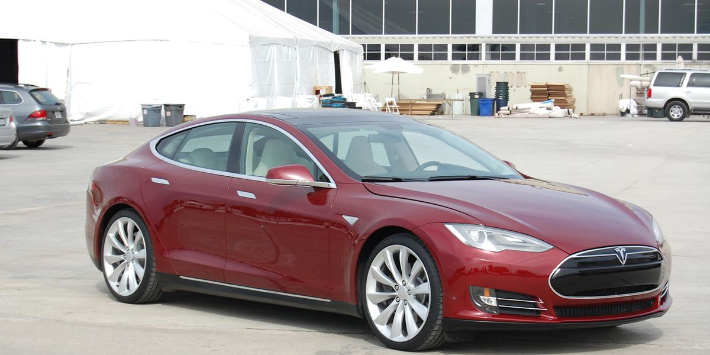

History
1886
The automobile has been around in some form since 1886, when German inventor Karl Benz created the Benz Patent-Motorwagen.
1908

For over a decade, automobiles were seen as a toy for the rich, until Ford Motor Company, led by Henry Ford, created the Ford Model T in 1908. This vehicle revolutionized the car market, allowing automobile ownership to be available to the general populus instead of only the rich.
1942
Cars continued to shift and change in shape and form until the WWII, when many automotive manufacturers shifted their resources towards the war effort. Their massive factories were used to manufacture tanks, weapons, planes, and other war-related vehicles.
1950s

While the war put a pause on the car market, many important developments came about as a result. Infrastructure expansion, coupled with improved engine, safety, and comfort technologies, increased popularity of the automobile in the US.
1973
Gas crises in the 1970s led to further developments in the auto industry, shifting the focus from large gas-guzzling vehicles to smaller, more fuel-efficient vehicles. Interest in hybrid, electric, and other alternative fuel types increased, and emissions regulations became more strict.
1997
In the late 1990s and early 2000s, hybrid vehicles began to become more mainstream, through the introduction of models such as the Toyota Prius and Honda Insight.
2012
Tesla Motors began selling the Model S in 2012, marking one of the first mainstream fully-electric vehicles. These hybrid and electric technologies have become staples of the modern car market, and many major manufacturers have plans to "electrify" their entire line of vehicles in the coming years.
